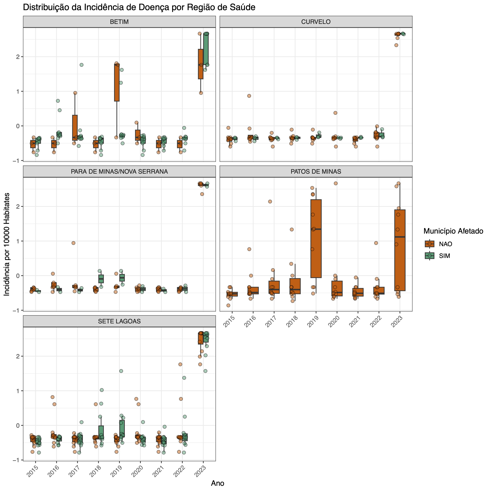
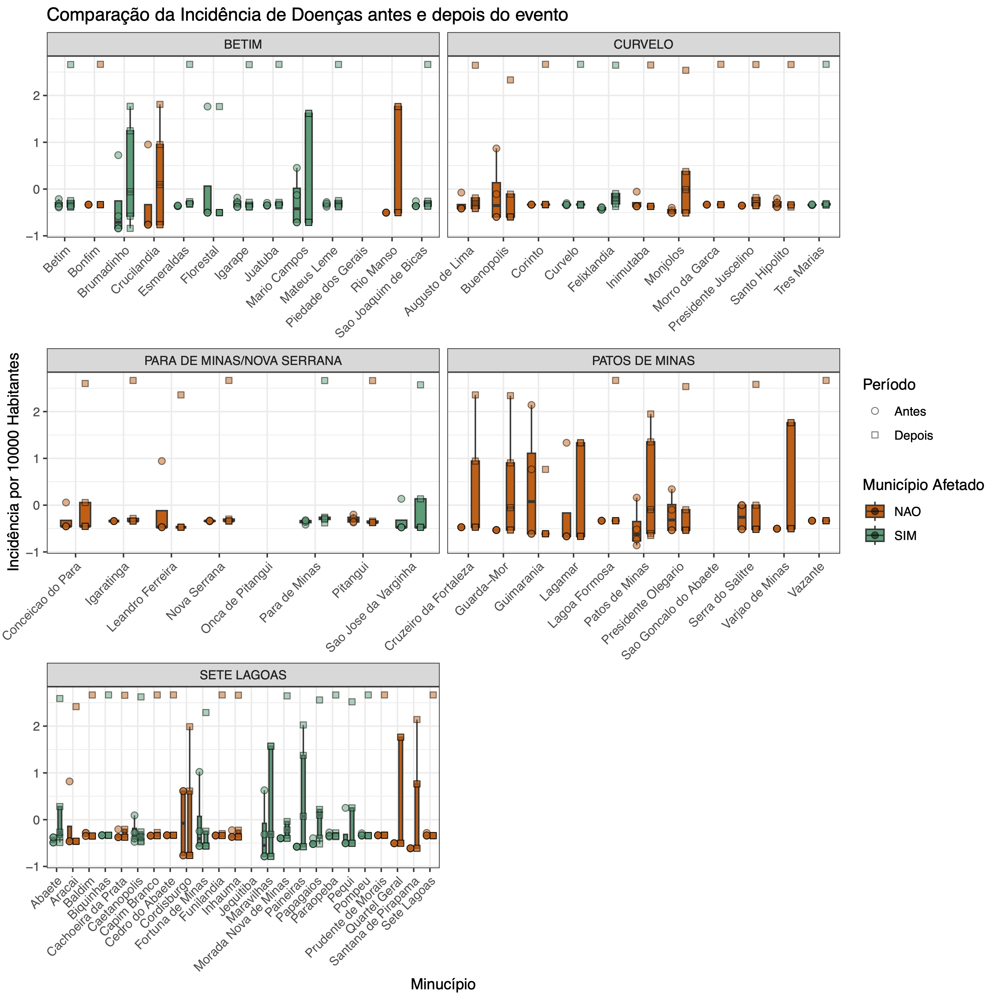
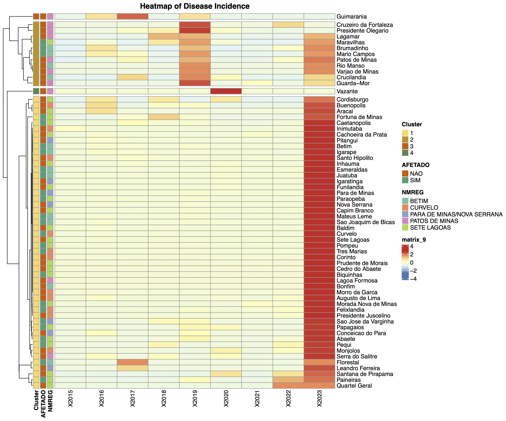
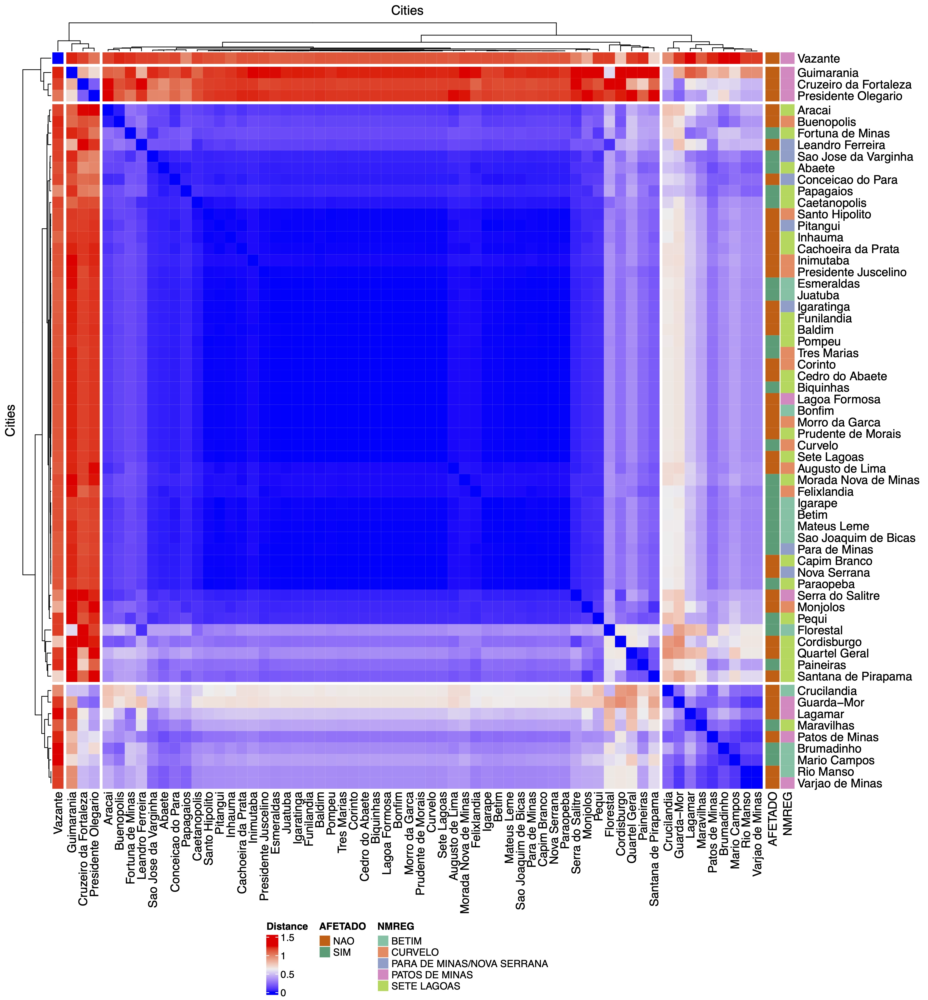
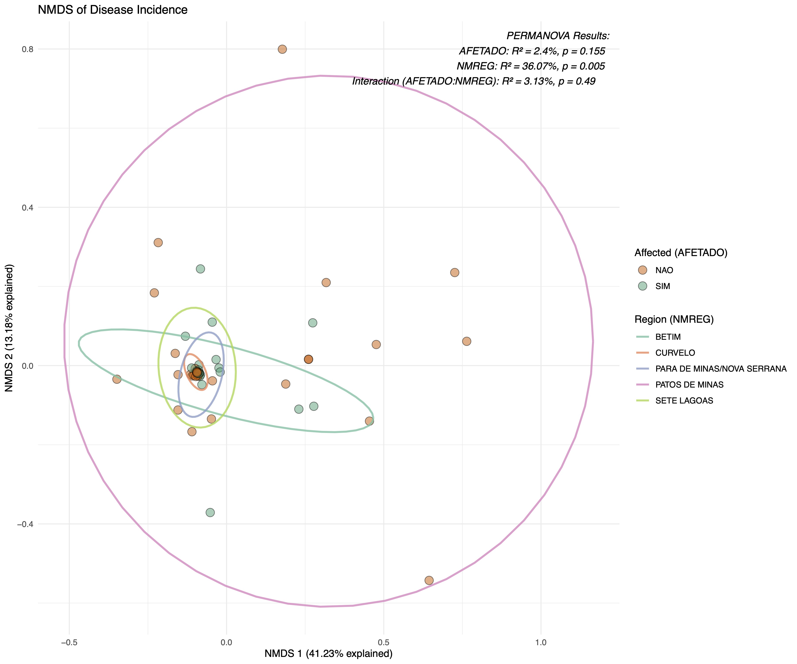
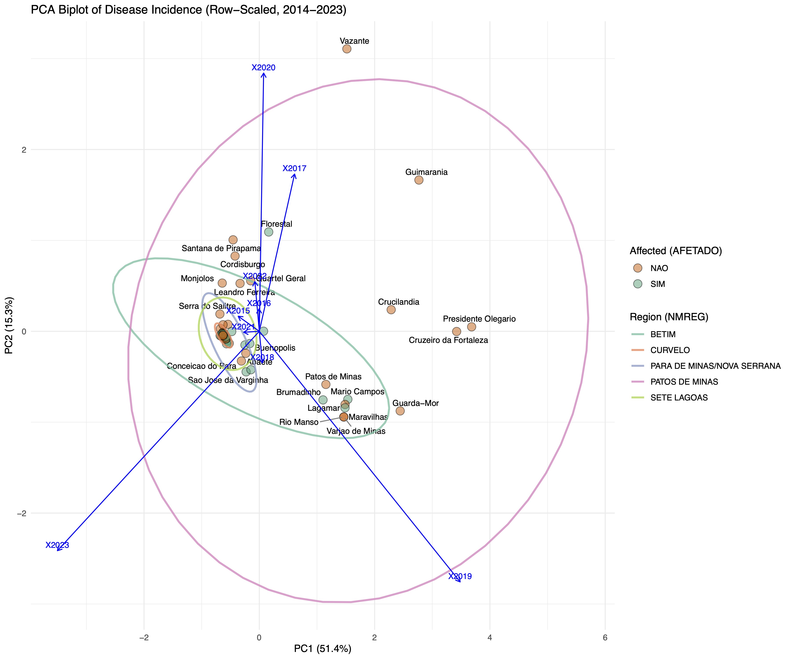
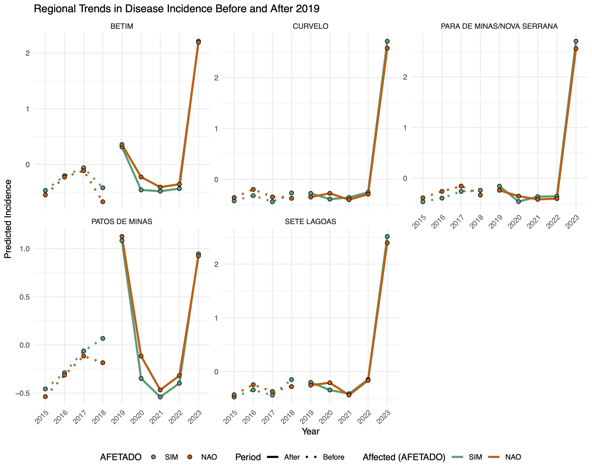

Os arquivos dos anos 2014 ao 2023 foram obtidos do SINAN através do seu sítio de FTP localizado em: ftp://ftp.datasus.gov.br/dissemin/publicos/SINAN/DADOS/ e identificados pelo prefixo CHIKBR.
O script lê os arquivos baixados do datasus e cria uma final_table a ser trabalhada nos passos seguintes.
#install.packages("devtools")
#library(devtools)
#install_github("danicat/read.dbc")
library(read.dbc) # ler dbc
library(tidyverse) #contem vários pacotes para diversas funções
library(foreign) #ler DBF
########################################################################################################
########################################################################################################
setwd("/data/gabriel/Trabalhos/Vale/CHIK/") #############
metadata = read.table("/data/gabriel/Trabalhos/Vale/metadata.txt", header = T, sep = "\t") #############
city_codes <- metadata$CODMUN6 #############
disease_prefix = "CHIKBR" #############
########################################################################################################
########################################################################################################
# Define folder path and initialize the list
folder_path <- getwd()
years <- 14:23
bases <- list()
########################################################################################################
########################################################################################################
############################## Data Processing #########################################################
########################################################################################################
########################################################################################################
# Loop through each year and read corresponding files if they exist
for (year in years) {
file_name <- paste0(disease_prefix, year, ".dbc")
file_path <- file.path(folder_path, file_name)
# Check if the file exists before reading
if (file.exists(file_path)) {
# Read the file and filter by city codes
data <- read.dbc(file_path)
filtered_data <- data[data$ID_MUNICIP %in% city_codes, ]
# Store the filtered data in the list
bases[[as.character(year)]] <- filtered_data
}
}
# Find common columns across all data frames in the list
common_variables <- Reduce(intersect, lapply(bases, colnames))
# Select only the common columns in each data frame
filtered_bases <- lapply(bases, function(df) df[, common_variables, drop = FALSE])
# Combine all data frames into one by binding rows
BASE <- do.call(rbind, filtered_bases)
# Drop unused factor levels in each factor column of the combined table
BASE[] <- lapply(BASE, function(col) {
if (is.factor(col)) droplevels(col) else col
})
library(dplyr)
library(tidyr)
# Count entries by city and year
city_year_counts <- BASE %>%
count(ID_MUNICIP, NU_ANO) %>%
pivot_wider(names_from = NU_ANO, values_from = n, values_fill = 0)
# View the resulting table
city_year_counts
city_year_counts <- city_year_counts %>%
mutate(ID_MUNICIP = as.character(ID_MUNICIP))
metadata <- metadata %>%
rename(ID_MUNICIP = CODMUN6) %>%
mutate(ID_MUNICIP = as.character(ID_MUNICIP))
# Merge the city-year counts with the metadata
final_table <- left_join(metadata, city_year_counts, by = "ID_MUNICIP")
# View the final table
final_table[is.na(final_table)] = 0
final_table
####################
### Descriptive ####
####################
library(dplyr)
library(tidyr)
# Reshape data to long format
final_table_long <- final_table %>%
pivot_longer(
cols = starts_with("20"), # Select year columns (e.g., 2014, 2015, etc.)
names_to = "Year", # Name of the new column for years
values_to = "Cases" # Name of the new column for case counts
) %>%
mutate(Year = as.numeric(Year)) # Ensure Year is numeric
# Categorize into "Before" and "After" periods
final_table_long <- final_table_long %>%
mutate(Period = case_when(
Year >= 2014 & Year <= 2018 ~ "Before",
Year >= 2019 & Year <= 2023 ~ "After",
TRUE ~ NA_character_ # Exclude years outside the range
))
# Filter out rows with missing cases or years outside the range
final_table_long <- final_table_long %>%
filter(!is.na(Cases) & Year >= 2014 & Year <= 2023)
# Calculate statistics for each period, including the entire range (General)
summary_stats <- final_table_long %>%
group_by(CODREG, NMREG, ID_MUNICIP, NMMUNICIPIO, CENSO2022, AFETADO) %>%
summarise(
General_Mean = mean(Cases, na.rm = TRUE), # Mean for all years
General_SD = sd(Cases, na.rm = TRUE), # SD for all years
Before_Mean = mean(Cases[Period == "Before"], na.rm = TRUE), # Mean for Before period
Before_SD = sd(Cases[Period == "Before"], na.rm = TRUE), # SD for Before period
After_Mean = mean(Cases[Period == "After"], na.rm = TRUE), # Mean for After period
After_SD = sd(Cases[Period == "After"], na.rm = TRUE), # SD for After period
.groups = "drop"
)
summary_stats = data.frame(summary_stats)
library(knitr)
kable(summary_stats)
Ao carregar os dados, temos uma descrição da média e desvio padrão do número de casos em cada município durante todo o perídio, e estratificado por períodos pré e pós rompimento da barragem.
| CODREG | NMREG | ID_MUNICIP | NMMUNICIPIO | CENSO2022 | AFETADO | General_Mean | General_SD | Before_Mean | Before_SD | After_Mean | After_SD |
|---|---|---|---|---|---|---|---|---|---|---|---|
| 31017 | BETIM | 310670 | Betim | 411846 | SIM | 179.7777778 | 457.3930962 | 32.00 | 36.6242179 | 298.0 | 614.8999919 |
| 31017 | BETIM | 310810 | Bonfim | 7434 | NAO | 0.6666667 | 2.0000000 | 0.00 | 0.0000000 | 1.2 | 2.6832816 |
| 31017 | BETIM | 310900 | Brumadinho | 38915 | SIM | 3.2222222 | 3.8333333 | 1.75 | 2.8722813 | 4.4 | 4.3931765 |
| 31017 | BETIM | 312060 | Crucilandia | 5434 | NAO | 0.8888889 | 1.1666667 | 0.50 | 1.0000000 | 1.2 | 1.3038405 |
| 31017 | BETIM | 312410 | Esmeraldas | 85598 | SIM | 26.8888889 | 73.9534388 | 0.25 | 0.5000000 | 48.2 | 98.2888600 |
| 31017 | BETIM | 312600 | Florestal | 8045 | SIM | 0.2222222 | 0.4409586 | 0.25 | 0.5000000 | 0.2 | 0.4472136 |
| 31017 | BETIM | 313010 | Igarape | 45847 | SIM | 3.8888889 | 10.1912272 | 0.75 | 0.9574271 | 6.4 | 13.7586337 |
| 31017 | BETIM | 313665 | Juatuba | 30716 | SIM | 34.2222222 | 95.5755954 | 2.00 | 2.7080128 | 60.0 | 128.0429615 |
| 31017 | BETIM | 314015 | Mario Campos | 15900 | SIM | 1.2222222 | 1.7159384 | 0.75 | 0.9574271 | 1.6 | 2.1908902 |
| 31017 | BETIM | 314070 | Mateus Leme | 37841 | SIM | 11.4444444 | 30.2411603 | 1.50 | 1.2909944 | 19.4 | 40.6177301 |
| 31017 | BETIM | 315040 | Piedade dos Gerais | 5019 | NAO | 0.0000000 | 0.0000000 | 0.00 | 0.0000000 | 0.0 | 0.0000000 |
| 31017 | BETIM | 315530 | Rio Manso | 5568 | NAO | 0.2222222 | 0.4409586 | 0.00 | 0.0000000 | 0.4 | 0.5477226 |
| 31017 | BETIM | 316292 | Sao Joaquim de Bicas | 34348 | SIM | 6.8888889 | 18.8111964 | 0.50 | 1.0000000 | 12.0 | 25.1694259 |
| 31019 | CURVELO | 310480 | Augusto de Lima | 4538 | NAO | 3.6666667 | 8.8175960 | 0.75 | 1.5000000 | 6.0 | 11.7686023 |
| 31019 | CURVELO | 310920 | Buenopolis | 9150 | NAO | 1.2222222 | 2.0480343 | 1.00 | 1.4142136 | 1.4 | 2.6076810 |
| 31019 | CURVELO | 311910 | Corinto | 23532 | NAO | 109.3333333 | 324.6267087 | 1.00 | 0.8164966 | 196.0 | 435.4761762 |
| 31019 | CURVELO | 312090 | Curvelo | 80665 | SIM | 178.2222222 | 508.0941787 | 10.00 | 10.6144556 | 312.8 | 682.1269677 |
| 31019 | CURVELO | 312570 | Felixlandia | 13978 | SIM | 32.0000000 | 72.4913788 | 1.75 | 2.0615528 | 56.2 | 94.1259794 |
| 31019 | CURVELO | 313110 | Inimutaba | 7371 | NAO | 5.8888889 | 15.8780072 | 1.25 | 2.5000000 | 9.6 | 21.4662526 |
| 31019 | CURVELO | 314250 | Monjolos | 2169 | NAO | 9.2222222 | 18.0331485 | 0.75 | 0.9574271 | 16.0 | 22.8144691 |
| 31019 | CURVELO | 314360 | Morro da Garca | 2411 | NAO | 0.1111111 | 0.3333333 | 0.00 | 0.0000000 | 0.2 | 0.4472136 |
| 31019 | CURVELO | 315320 | Presidente Juscelino | 3465 | NAO | 4.1111111 | 11.6022029 | 0.00 | 0.0000000 | 7.4 | 15.4531550 |
| 31019 | CURVELO | 316060 | Santo Hipolito | 2717 | NAO | 8.4444444 | 21.9949489 | 1.50 | 1.9148542 | 14.0 | 29.6310648 |
| 31019 | CURVELO | 316935 | Tres Marias | 28895 | SIM | 22.1111111 | 64.8371893 | 0.25 | 0.5000000 | 39.6 | 86.8751978 |
| 31024 | SETE LAGOAS | 310020 | Abaete | 22675 | SIM | 4.4444444 | 9.0982294 | 0.50 | 0.5773503 | 7.6 | 11.7175083 |
| 31024 | SETE LAGOAS | 310320 | Aracai | 2181 | NAO | 1.4444444 | 3.1269438 | 1.00 | 2.0000000 | 1.8 | 4.0249224 |
| 31024 | SETE LAGOAS | 310500 | Baldim | 7492 | NAO | 5.2222222 | 14.9229503 | 0.50 | 0.5773503 | 9.0 | 20.1246118 |
| 31024 | SETE LAGOAS | 310700 | Biquinhas | 2383 | SIM | 0.1111111 | 0.3333333 | 0.00 | 0.0000000 | 0.2 | 0.4472136 |
| 31024 | SETE LAGOAS | 310960 | Cachoeira da Prata | 3693 | NAO | 2.2222222 | 5.9324906 | 0.25 | 0.5000000 | 3.8 | 7.9498428 |
| 31024 | SETE LAGOAS | 310990 | Caetanopolis | 11435 | SIM | 26.7777778 | 56.4729532 | 11.75 | 14.2448821 | 38.8 | 76.2869583 |
| 31024 | SETE LAGOAS | 311250 | Capim Branco | 10663 | NAO | 10.1111111 | 29.5907268 | 0.00 | 0.0000000 | 18.2 | 39.5878769 |
| 31024 | SETE LAGOAS | 311560 | Cedro do Abaete | 1081 | NAO | 0.3333333 | 1.0000000 | 0.00 | 0.0000000 | 0.6 | 1.3416408 |
| 31024 | SETE LAGOAS | 311890 | Cordisburgo | 7547 | NAO | 0.5555556 | 0.7264832 | 0.50 | 0.5773503 | 0.6 | 0.8944272 |
| 31024 | SETE LAGOAS | 312640 | Fortuna de Minas | 3093 | SIM | 1.7777778 | 3.1534813 | 1.50 | 2.3804761 | 2.0 | 3.9370039 |
| 31024 | SETE LAGOAS | 312720 | Funilandia | 4686 | NAO | 8.5555556 | 25.2938288 | 0.00 | 0.0000000 | 15.4 | 33.8791972 |
| 31024 | SETE LAGOAS | 313100 | Inhauma | 6239 | NAO | 2.5555556 | 6.9302076 | 0.25 | 0.5000000 | 4.4 | 9.2897793 |
| 31024 | SETE LAGOAS | 313570 | Jequitiba | 5883 | NAO | 0.0000000 | 0.0000000 | 0.00 | 0.0000000 | 0.0 | 0.0000000 |
| 31024 | SETE LAGOAS | 313970 | Maravilhas | 7333 | SIM | 1.6666667 | 2.1213203 | 1.00 | 1.4142136 | 2.2 | 2.5884358 |
| 31024 | SETE LAGOAS | 314350 | Morada Nova de Minas | 9067 | SIM | 2.2222222 | 5.5851987 | 0.00 | 0.0000000 | 4.0 | 7.3143694 |
| 31024 | SETE LAGOAS | 314640 | Paineiras | 4224 | SIM | 0.8888889 | 1.5365907 | 0.00 | 0.0000000 | 1.6 | 1.8165902 |
| 31024 | SETE LAGOAS | 314690 | Papagaios | 13920 | SIM | 8.4444444 | 16.2412370 | 0.50 | 1.0000000 | 14.8 | 20.3273215 |
| 31024 | SETE LAGOAS | 314740 | Paraopeba | 24107 | SIM | 85.1111111 | 234.0862258 | 7.75 | 9.2870878 | 147.0 | 314.2538783 |
| 31024 | SETE LAGOAS | 314960 | Pequi | 4155 | SIM | 0.6666667 | 1.3228757 | 0.25 | 0.5000000 | 1.0 | 1.7320508 |
| 31024 | SETE LAGOAS | 315200 | Pompeu | 31047 | SIM | 138.8888889 | 404.3452870 | 7.25 | 9.3941471 | 244.2 | 543.8126516 |
| 31024 | SETE LAGOAS | 315360 | Prudente de Morais | 11466 | NAO | 50.8888889 | 152.2920258 | 0.00 | 0.0000000 | 91.6 | 204.2652687 |
| 31024 | SETE LAGOAS | 315370 | Quartel Geral | 3179 | NAO | 0.2222222 | 0.4409586 | 0.00 | 0.0000000 | 0.4 | 0.5477226 |
| 31024 | SETE LAGOAS | 315850 | Santana de Pirapama | 7030 | NAO | 0.4444444 | 0.7264832 | 0.00 | 0.0000000 | 0.8 | 0.8366600 |
| 31024 | SETE LAGOAS | 316720 | Sete Lagoas | 227397 | NAO | 782.1111111 | 2268.3695931 | 44.75 | 63.4684961 | 1372.0 | 3051.1174183 |
| 31032 | PARA DE MINAS/NOVA SERRANA | 311760 | Conceicao do Para | 5415 | NAO | 2.6666667 | 5.8949131 | 0.75 | 1.5000000 | 4.2 | 7.8230429 |
| 31032 | PARA DE MINAS/NOVA SERRANA | 313020 | Igaratinga | 10830 | NAO | 5.8888889 | 17.2948290 | 0.00 | 0.0000000 | 10.6 | 23.1473541 |
| 31032 | PARA DE MINAS/NOVA SERRANA | 313830 | Leandro Ferreira | 3199 | NAO | 0.3333333 | 0.7071068 | 0.25 | 0.5000000 | 0.4 | 0.8944272 |
| 31032 | PARA DE MINAS/NOVA SERRANA | 314520 | Nova Serrana | 105552 | NAO | 124.2222222 | 356.5774032 | 3.75 | 2.5000000 | 220.6 | 477.6670388 |
| 31032 | PARA DE MINAS/NOVA SERRANA | 314580 | Onca de Pitangui | 2969 | NAO | 0.0000000 | 0.0000000 | 0.00 | 0.0000000 | 0.0 | 0.0000000 |
| 31032 | PARA DE MINAS/NOVA SERRANA | 314710 | Para de Minas | 97139 | SIM | 44.8888889 | 107.7908211 | 6.25 | 4.5000000 | 75.8 | 143.3010816 |
| 31032 | PARA DE MINAS/NOVA SERRANA | 315140 | Pitangui | 26685 | NAO | 24.0000000 | 64.6084360 | 4.50 | 5.0662281 | 39.6 | 87.4345469 |
| 31032 | PARA DE MINAS/NOVA SERRANA | 316310 | Sao Jose da Varginha | 4536 | SIM | 0.7777778 | 1.6414763 | 0.25 | 0.5000000 | 1.2 | 2.1679483 |
| 31057 | PATOS DE MINAS | 312070 | Cruzeiro da Fortaleza | 3521 | NAO | 0.3333333 | 0.7071068 | 0.00 | 0.0000000 | 0.6 | 0.8944272 |
| 31057 | PATOS DE MINAS | 312860 | Guarda-Mor | 6539 | NAO | 1.1111111 | 2.0883273 | 0.00 | 0.0000000 | 2.0 | 2.5495098 |
| 31057 | PATOS DE MINAS | 312890 | Guimarania | 8478 | NAO | 0.4444444 | 0.7264832 | 0.75 | 0.9574271 | 0.2 | 0.4472136 |
| 31057 | PATOS DE MINAS | 313710 | Lagamar | 6631 | NAO | 0.6666667 | 1.0000000 | 0.50 | 1.0000000 | 0.8 | 1.0954451 |
| 31057 | PATOS DE MINAS | 313750 | Lagoa Formosa | 18904 | NAO | 0.3333333 | 1.0000000 | 0.00 | 0.0000000 | 0.6 | 1.3416408 |
| 31057 | PATOS DE MINAS | 314800 | Patos de Minas | 159235 | NAO | 20.2222222 | 23.4881767 | 8.75 | 10.6887792 | 29.4 | 27.9427987 |
| 31057 | PATOS DE MINAS | 315340 | Presidente Olegario | 18765 | NAO | 1.2222222 | 2.2791324 | 0.75 | 0.9574271 | 1.6 | 3.0495901 |
| 31057 | PATOS DE MINAS | 316170 | Sao Goncalo do Abaete | 7375 | SIM | 0.0000000 | 0.0000000 | 0.00 | 0.0000000 | 0.0 | 0.0000000 |
| 31057 | PATOS DE MINAS | 316680 | Serra do Salitre | 11801 | NAO | 1.0000000 | 1.9364917 | 0.50 | 0.5773503 | 1.4 | 2.6076810 |
| 31057 | PATOS DE MINAS | 317075 | Varjao de Minas | 6969 | NAO | 0.2222222 | 0.4409586 | 0.00 | 0.0000000 | 0.4 | 0.5477226 |
| 31057 | PATOS DE MINAS | 317100 | Vazante | 19975 | NAO | 0.1111111 | 0.3333333 | 0.00 | 0.0000000 | 0.2 | 0.4472136 |
O seguinte script cria o conjunto de variáveis a ser utilizada para a exploração, e os salva em um arquivo .Rdata que pode ser posteriormente carregado com a função load().
#install.packages("devtools")
#library(devtools)
#install_github("danicat/read.dbc")
library(read.dbc) # ler dbc
library(tidyverse) #contem vários pacotes para diversas funções
library(foreign) #ler DBF
########################################################################################################
########################################################################################################
setwd("/data/gabriel/Trabalhos/Vale/DENG/") #############
metadata = read.table("/data/gabriel/Trabalhos/Vale/metadata.txt", header = T, sep = "\t") #############
city_codes <- metadata$CODMUN6 #############
disease_prefix = "CHIKBR" #############
########################################################################################################
########################################################################################################
# Define folder path and initialize the list
folder_path <- getwd()
years <- 14:23
# Create a table with disease incidence per 10k population for each year
year_range <- as.character(2014:2023)
# Find existing year columns in the dataset
existing_years <- intersect(year_range, colnames(final_table))
# Dynamically create the incidence table
incidence_table <- final_table %>%
# Select necessary columns along with the existing years
select(NMMUNICIPIO, NMREG, AFETADO, CENSO2022, all_of(existing_years)) %>%
# Calculate incidence per 10k population for each available year
mutate(across(all_of(existing_years), ~ (.x / CENSO2022) * 10000, .names = "inc_{col}")) %>%
# Select relevant columns for the final table
select(NMMUNICIPIO, NMREG, AFETADO, starts_with("inc_"))
# Rename columns for readability
incidence_table <- incidence_table %>%
rename_with(~ sub("inc_", "", .), starts_with("inc_"))
# View the resulting table and scale
matrix = incidence_table[,4:ncol(incidence_table)]
matrix_scaled_by_row <- t(scale(t(matrix))) # Transpose, scale rows, then transpose back
incidence_table = cbind(incidence_table[,1:3], matrix_scaled_by_row)
# Assuming incidence_table is your data frame from previous steps
# Reshape the data from wide to long format for plotting
incidence_long <- incidence_table %>%
pivot_longer(
cols = all_of(existing_years), # Use only the columns that exist
names_to = "Year", # Name of the new column for years
values_to = "Incidence" # Name of the new column for incidence values
)
save(incidence_long, incidence_table, final_table, file = paste0(disease_prefix,"_variables.Rdata"))
Criar boxplots que mostrem a dispersão do Z-score ao longos dos anos, e separando o períodos em antes e depois do rompimento da barragem.
########################################################################################################
########################################################################################################
######################### Exploratory figures ##########################################################
########################################################################################################
########################################################################################################
library(tidyverse)
library(ggplot2)
########################################################################################################
########################################################################################################
setwd("/data/gabriel/Trabalhos/Vale/CHIK/") #############
metadata = read.table("/data/gabriel/Trabalhos/Vale/metadata.txt", header = T, sep = "\t") #############
city_codes <- metadata$CODMUN6 #############
disease_prefix = "CHIKBR" #############
########################################################################################################
########################################################################################################
# Load previously processed data
load(paste0(disease_prefix,"_variables.Rdata"))
# Create boxplot with incidence per year
pdf(file = paste0(disease_prefix, "_ScaledbyYear.pdf"), width = 10, height = 10)
ggplot(incidence_long, aes(x = Year, y = Incidence, fill = AFETADO)) +
geom_boxplot(outlier.shape = NA, width = 0.5) + # Adjust box width
geom_point(position = position_jitterdodge(jitter.width = 0.15, dodge.width = 0.5), shape = 21, size = 2, stroke = 0.5, alpha = 0.5) + # Add points with jitter dodge
facet_wrap(~ NMREG, ncol = 2) +
scale_fill_manual(values = c("SIM" = "#1b9e77", "NAO" = "#d95f02")) +
labs(
title = "Distribuição da Incidência de Doença por Região de Saúde",
x = "Ano",
y = "Incidência por 10000 Habitates",
fill = "Município Afetado"
) +
theme_bw() +
theme(axis.text.x = element_text(angle = 45, hjust = 1))
dev.off()
# Categorize the years as "Before" and "After"
incidence_long <- incidence_long %>%
mutate(
Period = case_when(
Year %in% 2014:2018 ~ "Antes",
Year %in% 2019:2023 ~ "Depois"
)
) %>%
filter(!is.na(Period)) # Remove rows outside of the specified range
# Create the plot showing distribution per city before and after
pdf(file = paste0(disease_prefix, "_ScaledAntesDepois.pdf"), width = 10, height = 10)
ggplot(incidence_long, aes(x = NMMUNICIPIO, y = Incidence, fill = AFETADO)) +
geom_boxplot(aes(group = interaction(NMMUNICIPIO, Period), fill = AFETADO),
position = position_dodge(width = 0.8), width = 0.45, outlier.shape = NA) + # Adjust box width and dodge
geom_point(aes(shape = Period, fill = AFETADO, group = Period),
position = position_dodge(width = 0.8),
size = 2, stroke = 0.5, alpha = 0.5) + # Map Period to shape for distinction
facet_wrap(~ NMREG, ncol = 2, scales = "free_x") +
scale_fill_manual(values = c("SIM" = "#1b9e77", "NAO" = "#d95f02")) +
scale_shape_manual(values = c("Antes" = 21, "Depois" = 22)) + # Set shapes for periods
labs(
title = "Comparação da Incidência de Doenças antes e depois do evento",
x = "Minucípio",
y = "Incidência por 10000 Habitantes",
fill = "Município Afetado",
shape = "Período"
) +
theme_bw() +
theme(axis.text.x = element_text(angle = 45, hjust = 1))
dev.off()


A busca por padrões envolve o cálculo de distâncias para criar agrupamentos. A distância utilizada foi a correlação de Pearson, uma vez que o objetivo é identificar cidades que seguem o mesmo padrão da incidência ao longo dos anos.
O índice de Calinski-Harabasz foi utilizado para definir o número ótimo de cluster. Quando o número era maior que 10 (indicando falta de padrão), optamos para escolher visualmente. |
Neste caso, o número de agrupamentos foi 5.
library(tidyverse)
library(ggplot2)
library(pheatmap)
library(vegan)
library(ComplexHeatmap)
library(ggrepel)
########################################################################################################
########################################################################################################
setwd("/data/gabriel/Trabalhos/Vale/DENG/") #############
metadata = read.table("/data/gabriel/Trabalhos/Vale/metadata.txt", header = T, sep = "\t") #############
city_codes <- metadata$CODMUN6 #############
disease_prefix = "CHIKBR" #############
########################################################################################################
########################################################################################################
# Load previously processed data
load(paste0(disease_prefix,"_variables.Rdata"))
matrix = data.frame(incidence_table[,4:ncol(incidence_table)], row.names = incidence_table$NMMUNICIPIO)
row_anot = data.frame(incidence_table[,2:3], row.names = incidence_table$NMMUNICIPIO)
# Calculate the distance matrix
data.dist <- as.dist(1 - cor(t(matrix)))
# Perform hierarchical clustering
hc <- hclust(data.dist, method = "complete")
# Calculate the CH Index for different numbers of clusters
ch_index <- numeric(10)
for (k in 2:10) {
clustering <- cutree(hc, k = k)
ch_index[k] <- cluster.stats(d = as.dist(data.dist), clustering)$ch
}
# Find the optimal number of clusters
optimal_clusters <- which.max(ch_index)
optimal_clusters <- 5
# Plot the CH Index
plot(2:10, ch_index[2:10], type = "b", xlab = "Number of Clusters", ylab = "CH Index",
main = "Optimal Number of Clusters using CH Index")
abline(v = optimal_clusters, col = "red", lty = 2)
annotation_colors <- list(
AFETADO = c("SIM" = "#1b9e77", "NAO" = "#d95f02"), # Colors for AFETADO
NMREG = c("BETIM" = "#66c2a5", # Greenish
"CURVELO" = "#fc8d62", # Orange
"PARA DE MINAS/NOVA SERRANA" = "#8da0cb", # Blue
"PATOS DE MINAS" = "#e78ac3", # Pink
"SETE LAGOAS" = "#a6d854"), # Light green
Cluster = c("1" = "#FFDB6D", "2" = "#C4961A", "3" = "#D16103", "4" = "#52854C", "5" = "#293352")
)
row_anot = data.frame(row_anot, Cluster = as.factor(cutree(hc, k = optimal_clusters)))
A partir dos padrões, geramos 2 heatmaps:
# Plot the heatmap
pdf(file = paste0(disease_prefix, "_ScaledHeatmap.pdf"), width = 12, height = 10)
pheatmap(
mat = as.matrix(matrix[rowSums(matrix != 0) > 0, ]),
scale = "row",
annotation_row = row_anot[rowSums(matrix != 0) > 0, ],
annotation_colors = annotation_colors,
clustering_distance_rows = "correlation",
cluster_cols = F,
cutree_rows = optimal_clusters,
clustering_method = "complete",
show_rownames = TRUE,
show_colnames = TRUE,
main = "Heatmap of Disease Incidence"
)
dev.off()
# Create a color mapping for annotations
annotation_colors <- list(
AFETADO = c("SIM" = "#1b9e77", "NAO" = "#d95f02"),
NMREG = c("BETIM" = "#66c2a5",
"CURVELO" = "#fc8d62",
"PARA DE MINAS/NOVA SERRANA" = "#8da0cb",
"PATOS DE MINAS" = "#e78ac3",
"SETE LAGOAS" = "#a6d854")
)
# Define row annotations
row_annotation <- rowAnnotation(
AFETADO = row_anot$AFETADO,
NMREG = row_anot$NMREG,
col = annotation_colors
)
# Create the heatmap object with row annotations
ht <- Heatmap(
as.matrix(data.dist),
name = "Distance",
row_title = "Cities",
column_title = "Cities",
row_split = 5,
column_split = 5,
right_annotation = row_annotation
)
# Draw the heatmap with legends at the bottom
pdf(file = paste0(disease_prefix, "_ScaledDistance.pdf"), width = 13, height = 14)
draw(ht, heatmap_legend_side = "bottom", annotation_legend_side = "bottom")
dev.off()


Um teste exato de Fisher foi usado para avaliar se havia maior prevalência de municípios afetados, ou de uma determinada região em um cluster. Isso poderia explicar se os municípios se agrupam mais por suas propriedades regionais, ou pelo fato de terem sido afetados.
# Initialize results for affected prevalence
affected_results <- list()
for (cluster_id in unique(row_anot_clean$Cluster)) {
# Cities inside the cluster
inside_cluster <- row_anot_clean[row_anot_clean$Cluster == cluster_id, ]
# Cities outside the cluster
outside_cluster <- row_anot_clean[row_anot_clean$Cluster != cluster_id, ]
# Contingency table for AFETADO
affected_table <- matrix(
c(
sum(inside_cluster$AFETADO == "SIM"),
sum(inside_cluster$AFETADO == "NAO"),
sum(outside_cluster$AFETADO == "SIM"),
sum(outside_cluster$AFETADO == "NAO")
),
nrow = 2,
dimnames = list(
c("Inside Cluster", "Outside Cluster"),
c("Affected", "Not Affected")
)
)
# Run Fisher's test
fisher_affected <- fisher.test(affected_table)
# Save results
affected_results[[paste0("Cluster_", cluster_id)]] <- list(
pval = fisher_affected$p.value,
affected_ratio_inside = affected_table[1, 1] / sum(affected_table[1, ]),
affected_ratio_outside = affected_table[2, 1] / sum(affected_table[2, ])
)
}
# Initialize results for regional prevalence
region_results <- list()
for (cluster_id in unique(row_anot_clean$Cluster)) {
for (region in unique(row_anot_clean$NMREG)) {
# Cities inside the cluster
inside_cluster <- row_anot_clean[row_anot_clean$Cluster == cluster_id, ]
# Cities outside the cluster
outside_cluster <- row_anot_clean[row_anot_clean$Cluster != cluster_id, ]
# Contingency table for NMREG
region_table <- matrix(
c(
sum(inside_cluster$NMREG == region),
nrow(inside_cluster) - sum(inside_cluster$NMREG == region),
sum(outside_cluster$NMREG == region),
nrow(outside_cluster) - sum(outside_cluster$NMREG == region)
),
nrow = 2,
dimnames = list(
c("Inside Cluster", "Outside Cluster"),
c("In Region", "Not In Region")
)
)
# Run Fisher's test
fisher_region <- fisher.test(region_table)
# Save results
region_results[[paste0("Cluster_", cluster_id, "_Region_", region)]] <- list(
pval = fisher_region$p.value,
region_ratio_inside = region_table[1, 1] / sum(region_table[1, ]),
region_ratio_outside = region_table[2, 1] / sum(region_table[2, ])
)
}
}
#Compile
affected_results_df <- do.call(rbind, lapply(names(affected_results), function(name) {
data.frame(
Cluster = name,
pval = affected_results[[name]]$pval,
ratio_inside = affected_results[[name]]$affected_ratio_inside,
ratio_outside = affected_results[[name]]$affected_ratio_outside
)
}))
region_results_df <- do.call(rbind, lapply(names(region_results), function(name) {
parts <- strsplit(name, "_")[[1]] # Split name into cluster and region
data.frame(
Cluster = parts[2],
Region = parts[4],
pval = region_results[[name]]$pval,
ratio_inside = region_results[[name]]$region_ratio_inside,
ratio_outside = region_results[[name]]$region_ratio_outside
)
}))
kable(subset(affected_results_df, subset = pval < 0.05), format = "markdown")
kable(subset(region_results_df, subset = pval < 0.05), format = "markdown")
Os clusters 1 e 2 estão superrepresentados por municípios das regiões de Sete Lagoas e Patos de Minas, respectivamente.
| Cluster | Region | pval | ratio_inside | ratio_outside |
|---|---|---|---|---|
| 1 | PATOS DE MINAS | 0.0000126 | 0.2000000 | 0.9056604 |
| 1 | SETE LAGOAS | 0.0217441 | 0.9565217 | 0.7000000 |
| 2 | PATOS DE MINAS | 0.0010374 | 0.6000000 | 0.0943396 |
| 2 | SETE LAGOAS | 0.0443931 | 0.0434783 | 0.2500000 |
A importância de cada variável em explicar a variância entre os municípios foi medida através de um teste de PERMANOVA e foi visualizado em uma análise de Escalonamento Multidimensional não métrico (NMDS).
### PERMANOVA
# Ensure the annotation variables are factors
row_anot_clean$AFETADO <- factor(row_anot_clean$AFETADO)
row_anot_clean$NMREG <- factor(row_anot_clean$NMREG)
# Perform the PERMANOVA test
permanova_result <- adonis2(
as.dist(data.dist) ~ AFETADO + NMREG + AFETADO:NMREG,
data = row_anot_clean,
permutations = 199,
method = "euclidean", by = "terms"
)
# Display the results
kable(permanova_result)
# Extract PERMANOVA results using rownames
permanova_text <- paste0(
"PERMANOVA Results:\n",
"AFETADO: R² = ", round(permanova_result["AFETADO", "R2"] * 100, 2), "%, p = ", signif(permanova_result["AFETADO", "Pr(>F)"], 3), "\n",
"NMREG: R² = ", round(permanova_result["NMREG", "R2"] * 100, 2), "%, p = ", signif(permanova_result["NMREG", "Pr(>F)"], 3), "\n",
"Interaction (AFETADO:NMREG): R² = ", round(permanova_result["AFETADO:NMREG", "R2"] * 100, 2), "%, p = ", signif(permanova_result["AFETADO:NMREG", "Pr(>F)"], 3)
)
# Perform NMDS
nmds_result <- metaMDS(as.dist(data.dist), k = 2, trymax = 100)
# Calculate variance explained by each NMDS axis
distance_matrix <- as.matrix(data.dist)
eigenvalues <- cmdscale(distance_matrix, k = 2, eig = TRUE)$eig
variance_explained_axis1 <- round(100 * eigenvalues[1] / sum(abs(eigenvalues)), 2)
variance_explained_axis2 <- round(100 * eigenvalues[2] / sum(abs(eigenvalues)), 2)
# Extract coordinates and add annotations
nmds_data <- data.frame(
NMDS1 = nmds_result$points[, 1],
NMDS2 = nmds_result$points[, 2],
NMREG = row_anot_clean$NMREG,
AFETADO = row_anot_clean$AFETADO
)
# Define region colors
region_colors <- c(
"BETIM" = "#66c2a5",
"CURVELO" = "#fc8d62",
"PARA DE MINAS/NOVA SERRANA" = "#8da0cb",
"PATOS DE MINAS" = "#e78ac3",
"SETE LAGOAS" = "#a6d854"
)
# Plot with ggplot2
pdf(file = paste0(disease_prefix, "_ScaledNMDS.pdf"), width = 12, height = 10)
ggplot(nmds_data, aes(x = NMDS1, y = NMDS2, fill = AFETADO)) +
geom_point(size = 4, alpha = 0.5, shape = 21, stroke = 0.5, color = "black") +
stat_ellipse(aes(group = NMREG, color = NMREG), size = 1, alpha = 0.8) + # Explicit group aesthetic for ellipses
scale_fill_manual(values = c("SIM" = "#1b9e77", "NAO" = "#d95f02")) +
scale_color_manual(values = region_colors) +
labs(
title = "NMDS of Disease Incidence",
x = paste0("NMDS 1 (", variance_explained_axis1, "% explained)"),
y = paste0("NMDS 2 (", variance_explained_axis2, "% explained)"),
fill = "Affected (AFETADO)",
color = "Region (NMREG)"
) +
annotate(
"text", x = Inf, y = Inf, label = permanova_text, hjust = 1.1, vjust = 1.2,
size = 4, color = "black", fontface = "italic"
) +
theme_minimal() +
theme(
legend.position = "right",
legend.box = "vertical"
)
dev.off()
O PERMANOVA aponta que a variável AFETADO explica 2,3%% da variabilidade observada entre as amostras. Por outro lado, a variável NMREG, que representa a região, responde por 36,06% da variabilidade (coluna R2), com um valor de p de 0,005 (coluna Pr(>F))
| Df | SumOfSqs | R2 | F | Pr(>F) | |
|---|---|---|---|---|---|
| AFETADO | 1 | 0.1642682 | 0.0239516 | 2.2146702 | 0.155 |
| NMREG | 4 | 2.4737615 | 0.3606938 | 8.3378350 | 0.005 |
| AFETADO:NMREG | 3 | 0.2149831 | 0.0313462 | 0.9661366 | 0.490 |
| Residual | 54 | 4.0053300 | 0.5840084 | NA | NA |
| Total | 62 | 6.8583429 | 1.0000000 | NA | NA |

A análise de componentes principais avalia qual o ano tem mais influência sobre o a distribuição dos municípios ao longo dos eixos X e Y.
### Visualize biplot PCA
# Perform PCA
pca_result_row_scaled <- prcomp(matrix_clean, scale. = F)
# Extract PCA scores for cities
pca_scores_row_scaled <- data.frame(
pca_result_row_scaled$x,
AFETADO = row_anot_clean$AFETADO,
NMREG = row_anot_clean$NMREG,
CityName = rownames(matrix_clean) # Add city names for labeling
)
# Extract PCA loadings for years
pca_loadings_row_scaled <- data.frame(
pca_result_row_scaled$rotation,
Variable = colnames(matrix_clean)
)
# PCA Biplot with ellipses for NMREG
pdf(file = paste0(disease_prefix, "_Scaledbiplot.pdf"), width = 12, height = 10)
ggplot() +
# Plot cities as points, styled by AFETADO
geom_point(data = pca_scores_row_scaled, aes(x = PC1, y = PC2, fill = AFETADO),
size = 4, alpha = 0.5, shape = 21, stroke = 0.5, color = "black") +
# Add city names with ggrepel
geom_text_repel(data = pca_scores_row_scaled, aes(x = PC1, y = PC2, label = CityName),
size = 3, box.padding = 0.3, point.padding = 0.2, segment.color = "grey50") +
# Add ellipses for NMREG
stat_ellipse(data = pca_scores_row_scaled, aes(x = PC1, y = PC2, group = NMREG, color = NMREG),
size = 1, alpha = 0.8) +
# Add arrows for years
geom_segment(data = pca_loadings_row_scaled, aes(x = 0, y = 0, xend = PC1 * 5, yend = PC2 * 5),
arrow = arrow(length = unit(0.2, "cm")), color = "blue", size = 0.5) +
# Label arrows with year names
geom_text(data = pca_loadings_row_scaled, aes(x = PC1 * 5, y = PC2 * 5, label = Variable),
color = "blue", size = 3, vjust = -0.5) +
# Define color scales
scale_fill_manual(values = c("SIM" = "#1b9e77", "NAO" = "#d95f02")) +
scale_color_manual(values = region_colors) +
# Add labels and themes
labs(
title = "PCA Biplot of Disease Incidence (Row-Scaled, 2014-2023)",
x = paste0("PC1 (", round(summary(pca_result_row_scaled)$importance[2, 1] * 100, 1), "%)"),
y = paste0("PC2 (", round(summary(pca_result_row_scaled)$importance[2, 2] * 100, 1), "%)"),
fill = "Affected (AFETADO)",
color = "Region (NMREG)"
) +
theme_minimal() +
theme(
legend.position = "right",
legend.box = "vertical"
)
dev.off()

A proposta foi de construir um modelo que explique a dinâmica da incidência 5 antes do rompimento da barragem (2014-2018) e comparar com um modelo que explique a dinâmica após o rompimento (2019-2023).
Avaliamos então a importância de cada variável ou combinação de variáveis com um teste anova.
########################################################################################################
########################################################################################################
###################################### Modeling ########################################################
########################################################################################################
########################################################################################################
library(tidyverse)
library(ggplot2)
library(knitr)
library(car)
########################################################################################################
########################################################################################################
setwd("/data/gabriel/Trabalhos/Vale/CHIK/") #############
metadata = read.table("/data/gabriel/Trabalhos/Vale/metadata.txt", header = T, sep = "\t") #############
city_codes <- metadata$CODMUN6 #############
disease_prefix = "CHIKBR" #############
########################################################################################################
########################################################################################################
# Load previously processed data
load(paste0(disease_prefix,"_variables.Rdata"))
cities_to_keep <- rownames(row_anot_clean)
incidence_long <- incidence_long %>%
filter(NMMUNICIPIO %in% cities_to_keep)
########################################################################################################
############################## Compare slopes ##########################################################
########################################################################################################
# Create a period variable
incidence_long$Period <- ifelse(incidence_long$Year < 2019, "Before", "After")
incidence_long$Period <- as.factor(incidence_long$Period)
#################### #################### #################### #################### ####################
#################### Regional Model. #################### #################### ####################
#################### #################### #################### #################### ####################
model_before_regional <- glm(
Incidence ~ Year + AFETADO + NMREG + Year:AFETADO + Year:NMREG + AFETADO:NMREG,
data = data_before,
family = gaussian
)
alias(model_before_regional)
# Summary and ANOVA for "Before"
kable(summary(model_before_regional)$coefficients)
kable(subset(summary(model_before_regional)$coefficients, subset = summary(model_before_regional)$coefficients[,4]<0.05))
anova_before_regional <- Anova(model_before_regional, type = "III", singular.ok = TRUE)
kable(anova_before_regional)
write.table(anova_before_regional, file = paste0(disease_prefix, "before_regional_anova.txt"), sep = "\t", quote = F)
data_after <- subset(incidence_long, Period == "After")
model_after_regional <- glm(
Incidence ~ Year + AFETADO + NMREG + Year:AFETADO + Year:NMREG + AFETADO:NMREG,
data = data_after,
family = gaussian
)
# Summary and ANOVA for "After"
kable(summary(model_after_regional)$coefficients)
kable(subset(summary(model_after_regional)$coefficients, subset = summary(model_after_regional)$coefficients[,4]<0.05))
anova_after_regional <- Anova(model_after_regional, type = "III", singular.ok = TRUE)
kable(anova_after_regional)
write.table(anova_after_regional, file = paste0(disease_prefix, "after_regional_anova.txt"), sep = "\t", quote = F)
# Predictions for "Before"
before_predictions_regional <- expand.grid(
Year = as.factor(seq(min(subset(incidence_long, Period == "Before")$Year), 2018, by = 1)),
AFETADO = c("SIM", "NAO"),
NMREG = unique(incidence_long$NMREG)
)
before_predictions_regional$Predicted_Incidence <- predict(model_before_regional, newdata = before_predictions_regional)
before_predictions_regional$Period <- "Before"
# Predictions for "After"
after_predictions_regional <- expand.grid(
Year = as.factor(seq(2019, max(subset(incidence_long, Period == "After")$Year), by = 1)),
AFETADO = c("SIM", "NAO"),
NMREG = unique(incidence_long$NMREG)
)
after_predictions_regional$Predicted_Incidence <- predict(model_after_regional, newdata = after_predictions_regional)
after_predictions_regional$Period <- "After"
# Combine predictions
combined_predictions_regional <- rbind(before_predictions_regional, after_predictions_regional)
pdf(file = paste0(disease_prefix, "_ScaledBeforeVsAfter_regionaltrend.pdf"), width = 10, height = 8)
ggplot(combined_predictions_regional, aes(x = Year, y = Predicted_Incidence, fill = AFETADO, color = AFETADO, linetype = Period, group = interaction(AFETADO, Period))) +
geom_line(size = 1.2) +
geom_point(size = 2, shape = 21, stroke = 0.5, color = "black") +
scale_color_manual(values = c("SIM" = "#1b9e77", "NAO" = "#d95f02")) +
scale_fill_manual(values = c("SIM" = "#1b9e77", "NAO" = "#d95f02")) +
scale_linetype_manual(values = c("Before" = "dotted", "After" = "solid")) +
facet_wrap(~ NMREG, scales = "free_y") + # Separate plots by region
labs(
title = "Regional Trends in Disease Incidence Before and After 2019",
x = "Year",
y = "Predicted Incidence",
color = "Affected (AFETADO)",
linetype = "Period"
) +
theme_minimal() +
theme(
axis.text.x = element_text(angle = 45, hjust = 1),
legend.position = "bottom"
)
dev.off()
Para o modelo antes do rompimento, temos uma grande importância da variável Ano.
| LR Chisq | Df | Pr(>Chisq) | |
|---|---|---|---|
| Year | 11.6828602 | 3 | 0.0085524 |
| AFETADO | 0.2704164 | 1 | 0.6030526 |
| NMREG | 1.9382243 | 4 | 0.7471200 |
| Year:AFETADO | 2.7122683 | 3 | 0.4381464 |
| Year:NMREG | 18.1262616 | 12 | 0.1119102 |
| AFETADO:NMREG | 1.0138914 | 3 | 0.7978907 |
Detalhadamente, vemos que o ano de 2017 teve mais impacto na região de Sete Lagoas.
| Estimate | Std. Error | t value | Pr(>|t|) | |
|---|---|---|---|---|
| (Intercept) | -0.5485953 | 0.1564717 | -3.506035 | 0.0005489 |
| Year2017 | 0.4357065 | 0.1882237 | 2.314833 | 0.0215234 |
| Year2017:NMREGSETE LAGOAS | -0.3742497 | 0.1891856 | -1.978214 | 0.0491246 |
No modelo após o rompimento, observamos importância das variáveis tempo, região, e suas interações com os municípios afetados.
| LR Chisq | Df | Pr(>Chisq) | |
|---|---|---|---|
| Year | 137.3409835 | 4 | 0.0000000 |
| AFETADO | 0.0459971 | 1 | 0.8301810 |
| NMREG | 59.0663346 | 4 | 0.0000000 |
| Year:AFETADO | 1.5220265 | 4 | 0.8227327 |
| Year:NMREG | 133.7890822 | 16 | 0.0000000 |
| AFETADO:NMREG | 0.4111883 | 3 | 0.9379217 |
Detalhadamente temos diversas combinações com potencial preditivo.
| Estimate | Std. Error | t value | Pr(>|t|) | |
|---|---|---|---|---|
| Year2020 | -0.5835631 | 0.2643594 | -2.207461 | 0.0280871 |
| Year2021 | -0.7655125 | 0.2643594 | -2.895727 | 0.0040788 |
| Year2022 | -0.7139350 | 0.2643594 | -2.700623 | 0.0073396 |
| Year2023 | 1.8365979 | 0.2643594 | 6.947353 | 0.0000000 |
| NMREGCURVELO | -0.7051314 | 0.2557555 | -2.757053 | 0.0062131 |
| NMREGPARA DE MINAS/NOVA SERRANA | -0.5976299 | 0.2831592 | -2.110580 | 0.0356889 |
| NMREGPATOS DE MINAS | 0.7690427 | 0.2685744 | 2.863425 | 0.0045054 |
| NMREGSETE LAGOAS | -0.6124771 | 0.2243429 | -2.730094 | 0.0067302 |
| Year2020:NMREGCURVELO | 0.6578952 | 0.3205972 | 2.052093 | 0.0410838 |
| Year2021:NMREGCURVELO | 0.7133901 | 0.3205972 | 2.225191 | 0.0268594 |
| Year2022:NMREGCURVELO | 0.7702392 | 0.3205972 | 2.402514 | 0.0169293 |
| Year2023:NMREGCURVELO | 1.0924933 | 0.3205972 | 3.407682 | 0.0007506 |
| Year2023:NMREGPARA DE MINAS/NOVA SERRANA | 0.9601038 | 0.3602266 | 2.665278 | 0.0081359 |
| Year2021:NMREGPATOS DE MINAS | -0.8284195 | 0.3505700 | -2.363065 | 0.0188032 |
| Year2022:NMREGPATOS DE MINAS | -0.7311138 | 0.3505700 | -2.085500 | 0.0379229 |
| Year2023:NMREGPATOS DE MINAS | -2.0384370 | 0.3505700 | -5.814636 | 0.0000000 |
| Year2020:NMREGSETE LAGOAS | 0.6292623 | 0.2657104 | 2.368226 | 0.0185481 |
| Year2021:NMREGSETE LAGOAS | 0.5817648 | 0.2657104 | 2.189470 | 0.0293822 |
| Year2022:NMREGSETE LAGOAS | 0.8036037 | 0.2657104 | 3.024359 | 0.0027211 |
| Year2023:NMREGSETE LAGOAS | 0.8163940 | 0.2657104 | 3.072496 | 0.0023303 |
Visualmente observamos que o padrão está mais associado à característica regional e o momento em que foi atingido pela epidemia de dengue: anos 2016, 2019 ou 2023, o que corrobora o PCA mostrado.
